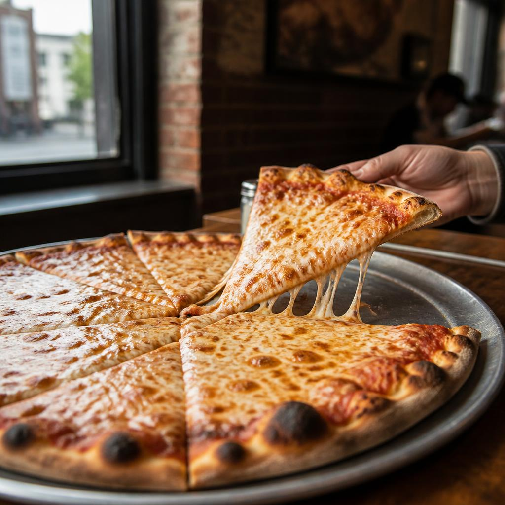

NEW YORK CITY · EST. 1898
Brooklyn,
in good
company.
A borough of big-hearted blocks, corner slices, and plans that turn into better plans.
Take a look around73° 59′ W
NEW YORK
A GOOD PLACE TO START
FOOD.
In Brooklyn, pizza is more than a meal—it’s a neighborhood ritual. Look for a wide, foldable slice, a crisp-bottomed crust, and just enough cheese to make the walk back worthwhile.
Order one for the walk.

standing up.
A LITTLE CONTEXT GOES A LONG WAY
QUICK FACTS.
- 01Brooklyn’s historic nickname is “The City of Churches.”
- 02The 2020 Census counted 2,736,074 Brooklynites.
- 03New York joined the Union in 1788—the 11th state.
CITY HALL, FOR THE RECORD
One city.
Five boroughs.
Brooklyn is one of New York City’s five boroughs. Zohran Mamdani is the current Mayor of New York City.
Meet the mayorKEEP AN EYE ON THE SKY
STATE
BIRD.
New York’s state bird is the Eastern bluebird: a bright flash of blue, often spotted perched along open fields and garden edges.
Tap the bird—or focus it and press Enter.
YOUR TURN
THINGS
I LIKE.
Got a place, a tiny discovery, or a very good snack? Add it to your own pocket list.
YOUR LIST0 SAVED
Your list starts with a good idea.
LOCAL KNOW-HOW, ON DEMAND
ASK THE
GUIDE.
Ask about Brooklyn, pizza, or the little details that make this borough itself.